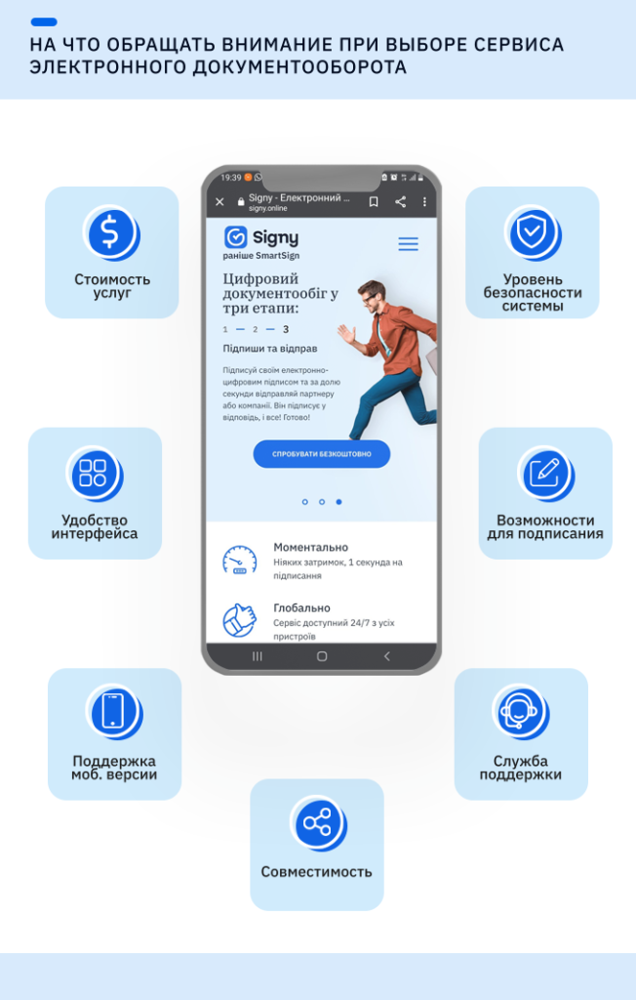

Электронный документооборот становится все более актуальным. Даже на государственном уровне взят уверенный курс на paperless, что уж говорить о частных компаниях, часть которых давно перевела свою деятельность в онлайн.
На что же обращать внимание при выборе сервиса электронного документооборота для своего бизнеса? В первую очередь стоит ориентироваться на индивидуальные потребности компании и ее возможности.

Стоимость услуг
Сегодня на рынке представлен широкий выбор сервисов электронного документооборота (далее по тексту — СЭДО). Все они предлагают различные инструменты и разные цены, от бесплатных услуг до абонементов на месяц или год.
Если объем ЭДО вашей компании небольшой — можно использовать бесплатные сервисы (они предоставляют ограниченное количество документов и ограниченный функционал). Если же вы часто подписываете электронные файлы — выбирайте более серьезные системы.
Для того чтобы подобрать максимально удобный сервис, воспользуйтесь бесплатным пробным периодом, который предоставляют почти все украинские провайдеры. Например, новые пользователи Signy могут бесплатно подписать и обработать 30 документов в течение месяца, с использованием полного функционала.
Совместимость
Большинство современных СЭДО дают возможность работать через обычный интернет-браузер, без необходимости установки специализированного программного обеспечения. Благодаря этому пользователи могут работать с документами с любого устройства и в любое время.
Это также облегчает и сотрудничество с контрагентами, которые могут использовать другой сервис или еще не перешли на цифровой документооборот. В таком случае вам достаточно подписать документ на своей стороне и отправить партнеру сформированную ссылку. Он зайдет по ссылке в браузер, попадет в вашу систему ЭДО и сможет просмотреть и подписать файл своей электронной подписью, а затем загрузить его на устройство. Таким образом у вас обоих будет юридически значимый подписанный документ.
Еще один вариант комфортной работы с контрагентами — когда сервисы совместимы для работы друг с другом. Например, Signy интегрируется с наиболее распространенными СЭДО: ERP IT-Enterprise, M.E.Doc, 1С и Вчасно. Благодаря этому каждый из контрагентов, находясь на своем рабочем месте и в своей системе, имеет возможность работать с одним и тем же документом и видеть по нему всю информацию.
Также при выборе провайдера стоит обращать внимание на следующие факторы:
Удобство интерфейса
Каждый сервис имеет свой набор инструментов и отличается интерфейсом. Одни ограничиваются только базовым функционалом, вроде подписания и отправки документа, другие — предлагают широкие возможности: создание структуры департаментов, настройку маршрута для нескольких адресатов, определение ролей пользователей и т.п.
Именно на такой случай существует пробный период, в течение которого вы можете оценить, насколько понятен и удобный для вас интерфейс и стоит ли продолжать в нем работать.
Возможности для подписания
Современный СЭДО должен в первую очередь поддерживать использование КЭП/УЭП — квалифицированные и усовершенствованные электронные подписи, выданные АЦСК.
Также желательно, чтобы у него была функция пакетного подписания (на случай, если вам понадобится быстро обработать несколько документов без необходимости ознакомления). Такая возможность позволяет уменьшить затраты времени на рутинные процессы.
Уровень безопасности системы
Уровень безопасности сервиса в большинстве случаев зависит от платформы, на которой он разработан. Если он соответствует украинскому уровню гарантий Г2 (или EAL 3 международного стандарта ISO/IEC 15408 «Common Criteria for Information Technology Security Evaluation»), то считается надежным. Это исключает возможность случайной или преднамеренной утечки данных, их несанкционированного сбора или передачи третьим лицам.
Поддержка мобильной версии
Удобно, когда можно работать в системе не только с компьютера, но и с планшета или телефона.
Наличие службы поддержки
При необходимости менеджер службы поддержки сервиса может лично помочь пользователю быстро разобраться со всеми инструментами или ответить на важные вопросы. Особенно данная услуга важна, если СЭДО имеет широкий функционал, которым вы планируете активно пользоваться.
Определитесь, какие параметры важны именно для вашей компании, и начните тестирование сервисов электронного документооборота уже в ближайшее время!